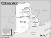

Rhode Island

Attention: If you use this or any of the AIRS lists in any state, please report any bad phone numbers or emails to the webmaster. This is the responsibility of all users, including you. Thank you!
Rich Macensky
(MACENSKY@webtv.net)
CROSSROADS:near the border of C.T. on rt 95
Westerly, 02891
PHONE: 401 322
VW'S: 1593 72 westy 79 trans
COMMENTS: I have a small shop with lots of tools and some parts.
I live down by the beach and welcome anyone in trouble my help, or just a
place to hang your hat and talk VW and share a beer.
Kurt
(kurt@netspace.org)
CROSSROADS: I-195 and I-95
Providence, 02912
PHONE: 401-225-6549
VW'S: 72 Westfalia
COMMENTS: I wanted to put RI back on the map, but I only work in Providence so tools and
help time are some distance away in MA. VW shop nearby. Coffee time and
mechanical opinions available.
AVAILABLE: In RI Weekdays 8am to 5pm - Call any time 7am to 10pm
familiar with: 1600, 1776+, dual carbs
I CAN PROVIDE THE FOLLOWING SERVICES:
INTERNET ACCESS
TELEPHONE ACCESS
TRANSPORTATION HELP
MECHANICAL HELP
COFFEE/TALK
Favorite beer type: Room temp will do.
christian friedrick
EMAIL: lunaluve_at_yahoo_dot_com
CROSSROADS: I-195 + south Broadway
east providence, 02914
PHONE: 401-270-0955
VW'S: 1979 westy,1985 vanagon
AVAILABLE: seven days a week between 5pm+11pm
I am familiar with: 1776+, fuel injection
I CAN PROVIDE THE FOLLOWING SERVICES
INTERNET ACCESS
TOOLS
TELEPHONE ACCESS
TRANSPORTATION HELP
SPACE TO WORK ON BUS
CAMPING: 2 nights
SPARE ROOM: none
Favorite beer type: Micro brands
Joe
EMAIL: jvol6321_at_postoffice_dot_uri_dot_edu
CROSSROADS: rte. 10 and Westminster
Providence, 02909
VW'S: 85 GL Westfalia
I am familiar with: wasserboxer
I CAN PROVIDE THE FOLLOWING SERVICES
INTERNET ACCESS
TOOLS
TELEPHONE ACCESS
TRANSPORTATION HELP
MECHANICAL HELP
SPACE TO WORK ON BUS
STORAGE SPACE
COFFEE/TALK
CAMPING: none
SPARE ROOM: none
Favorite beer type: Micro brands
Greg Sorbello
EMAIL: gregorysorbello_at_yahoo_dot_com
CROSSROADS: Interstate 95 and Interstate 295
CITY: Johnston, 02919
VW'S: 1995 Jetta GLX, 1975 Westfalia pop-up
COMMENTS: I don't have a garage, but I do have pretty much any tool that you
would need to work on an air cooled VW. I usually keep a good stock of
normal wear parts on hand. If you need help I will do what I can to help.
AVAILABLE: I am usually available outside of the normal 9 -5 m - f working
hours.
I am familiar with: 1776+, fuel injection
I CAN PROVIDE THE FOLLOWING SERVICES
INTERNET ACCESS
TOOLS
TELEPHONE ACCESS
TRANSPORTATION HELP
MECHANICAL HELP
SPACE TO WORK ON BUS
STORAGE SPACE
SOME PARTS
COFFEE/TALK
CAMPING: 1 night
SPARE ROOM: none
Favorite beer type: Micro brands
Jimmy Underwood
EMAIL: jundertow_at_yahoo_dot_com
CROSSROADS: Ocean Drive Newport
CITY: Newport
ZIP CODE: 02840
PHONE: 401.849.3409
VW'S: 66 Split window
COMMENTS: I move around alot...but if you are in need of help....there are two
mechanics I know of...one primarily....that are VW guru's in RI and will help
you out for a fair price! "Chip" @ 846.6616..in Newport...some
guy on Gano St. in Prov and "Omars" in Warwick
AVAILABLE: ah.....
I am familiar with: 1600
I CAN PROVIDE THE FOLLOWING SERVICES
INTERNET ACCESS
TRANSPORTATION HELP
COFFEE/TALK
CAMPING: 1 night
SPARE ROOM: none
Favorite beer type: Anything cold
Robert Behler (Rob)
EMAIL: BrokenBeetle66_at_yahoo_dot_com
CROSSROADS: US I-95, US Rt 1
CITY: Westerly
ZIP CODE: 02891
PHONE: 401-348-8355
VW'S: 66' Bug Sedan
COMMENTS: Full-time college student, so my 66' Beetle is kind of a side hobby
right now. I've had my Bug for 3 yrs now. I'm no VW expert, but I'm
learning and will try to help with anything I possibly can, even if it's just a
ride. I have basic tools with limited workspace inside, but I do have
enough lawn space for Bug or Bus work, if needed (it's my grandparent's house,
so I have to work out stuff with them before being able to do anything in the
back lawn...also explains why I cant offer camping space/spare room...sorry).
Not too many connections as I do most of my work myself. Also, looking for
a VW (or any classic car) group to go to car shows with (taking my Bug, of
course) come summertime!! Hope I can help with anything you might need!!
P.S. I do have some Geo Metro experience and knowledge, in case there are
any Metro/Bug owners out there like me.
AVAILABLE: Weekday evenings (have class at URI until about 5 everyday), weekends
anytime. Summertime, dont know what my work schedule will be like...just
call and ask for Rob.
I am familiar with: 1600
I CAN PROVIDE THE FOLLOWING SERVICES
INTERNET ACCESS
TOOLS
TELEPHONE ACCESS
TRANSPORTATION HELP
MECHANICAL HELP
COFFEE/TALK
CAMPING: none
SPARE ROOM: none
Favorite beer type: I don't drink
John & Christina
EMAIL: crowderc_at_ids_dot_net
CROSSROADS: rt. 1, rt. 108
CITY: Wakefield
ZIP CODE: 02879
PHONE: 401-792-9243/633-4122
ONLY CALL IF EMERGENCY
VW'S: 1982 vanagon
COMMENTS: We're just starting to learn how to keep our own vw on the road, so no
shop and not many tools, but we know of some good, fairly priced mechanics in
town and where to get parts. Parking space, coffee and a sympathetic ear when
you find yourself in need.
AVAILABLE: evenings, generally 5 to 10, weekends
I CAN PROVIDE THE FOLLOWING SERVICES
INTERNET ACCESS
TELEPHONE ACCESS
TRANSPORTATION HELP
SPACE TO WORK ON BUS
CAMPING: 2 nights
SPARE ROOM: 1 night
Favorite beer type: Anything cold
Harry Smith
EMAIL: HarryLaneSmith_at_yahoo_dot_com
CROSSROADS: Prospect & Winter st.
CITY: Woonsocket
ZIP CODE: 02895
PHONE: 401-765-0540
VW'S: 1966 deluxe bus
AVAILABLE: out side of 9-5
I am familiar with: Bastard40hp
I CAN PROVIDE THE FOLLOWING SERVICES
INTERNET ACCESS
TELEPHONE ACCESS
SPACE TO WORK ON BUS
COFFEE/TALK
CAMPING: 1 night
SPARE ROOM: none
Favorite beer type: Thick and chewy
Chris
EMAIL: nepsplace_at_aol_dot_com
CROSSROADS: Exit 6A off 95, very close to highway
CITY: Coventry, 02816 PHONE: (401)822-3432, (401)826-7321
VW'S: Currently own a 1972 Campmobile, have had 71 and 79 of the same
COMMENTS: Call anytime- Just be clear about information- we're happy to help as
long as we have the right info- local parts and other resources available. I am
a self-employed carpenter who is home more often than not- I have owned VWs in
my youth and my son just got his first. Most of the time I am around and happy
to help, but if you catch me at a busy time I may be unable to be present but
you are free to use what resources you can. Just call ahead, be clear about your
needs and I'm sure we'll get you on your way as soon as possible. It's not an
option, but my favorite beer is Sierra Nevada, by the way!
AVAILABLE: Home most of the time- self-employed- should be around
I am familiar with: 1776+, dual carbs
I CAN PROVIDE THE FOLLOWING SERVICES
INTERNET ACCESS
TOOLS
TELEPHONE ACCESS
TRANSPORTATION HELP
MECHANICAL HELP
SPACE TO WORK ON BUS
STORAGE SPACE
SOME PARTS/CAN GET THEM
COFFEE/TALK
CAMPING: 3 nights SPARE ROOM: 2 nights
Favorite beer type: Light and Airy
James
EMAIL: Jamesagain_at_mac_dot_com
CROSSROADS: changin
CITY: providence, 02909
ONLY CALL IF EMERGENCY PHONE: 401-533-2335
VW'S: 79 FI
COMMENTS: Don't know too much, but I will help as much as I can if I'm around.
AVAILABLE: you'll just have to try me
I am familiar with: 1776+
I CAN PROVIDE THE FOLLOWING SERVICES
INTERNET ACCESS
TOOLS
TELEPHONE ACCESS
TRANSPORTATION HELP
COFFEE/TALK
CAMPING: 2 nights SPARE ROOM: CALL ME/IT DEPENDS
Favorite beer type: Room temp will do.
Jamie
EMAIL: jasatlaw_at_hotmail_dot_com
CROSSROADS: I-95 Rhode Island
CITY: Wakefield, 02879
PHONE: 401 792-0229
VW'S: 71 Bus, 87 Vanagon, 2003 Eurovan
COMMENTS: Have owned VW's for about 40 years, do all my own work, and have been
a faithful follower of brother John Muir since I got my first 63 Type II.
I travel around a bit, if you can't reach me by phone, try my email - I'm on it
several times a day, and sometimes night too.
AVAILABLE: Most times
I am familiar with: 25/36hp, Bastard40hp, 1200/1300, 1500/1600, 1776+, dual
carbs
I CAN PROVIDE THE FOLLOWING SERVICES
INTERNET ACCESS
TOOLS
TELEPHONE ACCESS
TRANSPORTATION HELP
MECHANICAL HELP
SPACE TO WORK ON BUS
COFFEE/TALK
CAMPING: 2 nights SPARE ROOM: none
Favorite beer type: Micro brands
Regan
EMAIL: regan_early_at_brown_dot_edu
CROSSROADS: Wickenden
CITY: 195 and 95 - Providence East Side
ZIP CODE: 02903
PHONE: 401-441-6773
VW'S: 79 Bus
COMMENTS: I'm a relative novice at VWs, but can do the basics and can be a spare
pair of hands - I want to learn! I can also help out with finding a good
mechanic (I know the best) and possibly a place to crash.
AVAILABLE: Evenings, weekends, some week days.
I am familiar with: fuel injection
I CAN PROVIDE THE FOLLOWING SERVICES
INTERNET ACCESS
TELEPHONE ACCESS
TRANSPORTATION HELP
COFFEE/TALK
CAMPING: none
SPARE ROOM: CALL ME/IT DEPENDS
Favorite beer type: Micro brands
{kind=link}